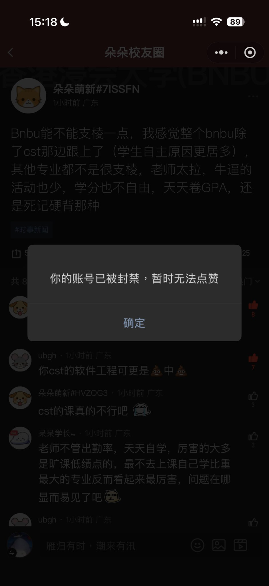
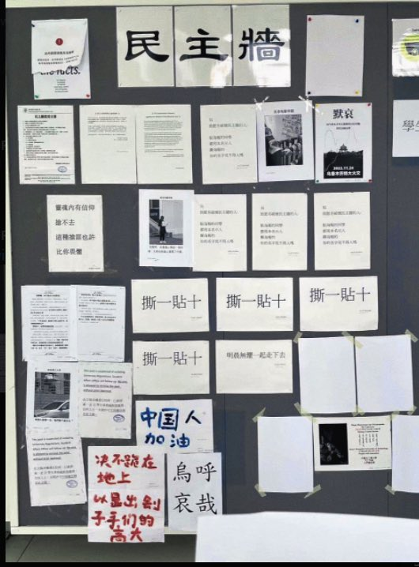

Sorcerer（三周目版）互fo寻回🍥🏳️⚧️
@Sorcerer198964
@HappyHejsDay 惨，我上周被喝了两次茶😭


𝕙𝕖𝕛😉
@HappyHejsDay
被晶
由于发表学校负面言论和某些李某还有吾尔某某，我被抓了。
全程没有程序公正，套话，训斥，骗取舍友信任，诱骗来审问。
x刚登上，号差点没了
手机sn imei qq vx fb tg 账号被记录 惨烈无比 https://t.co/pLoXMB8nRM